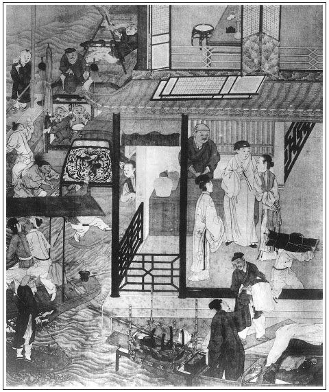

張回上文已大段結束。此回以下復蛇足愛姐何？蓋作者又為世之不改過者勸也。言如敬濟經歷雪霜，備嘗甘苦，已當知改過，乃依然照舊行徑，貪財好色，故愛姐來而金道復來看敬濟，言其飲酒宿娼，絕不改過也。雖有數年之艾在前，其如不肯灸何！故愛姐者，艾也，生以五月五日可知也。
詩曰：
教坊脂粉洗鉛華，一片閒心對落花。
舊曲聽來猶有恨，故園歸去已無家。
雲鬟半挽臨妝鏡，兩淚空流濕絳紗。
今日相逢白司馬，樽前重與訴琵琶。

話說一日，周守備與濟南府知府張叔夜，領人馬剿梁山泊賊王宋江三十六人，萬餘草寇，都受了招安。地方平復，張夾此處又結果《水滸》。表奏朝廷，大喜。加升張叔夜為都御史、山東安撫大使、升守備周秀為濟南兵馬制置，管理分巡河道，提察盜賊。部下從征有功人員，各升一級。軍門帶得敬濟名字，升為參謀之職，月給米二石，冠帶榮身。守備至十月中旬，領了敕書，率領人馬來家。先使人來報與春梅家中知道。春梅滿心歡喜，使陳敬濟與張勝、李安出城迎接。家中廳上排設酒筵，慶官賀喜。官員人等來拜賀送禮者不計其數。守備下馬，進入後堂，春梅、孫二娘接著。參賀已畢，陳敬濟就穿大紅員領，頭戴冠帽，腳穿皂靴，束著角帶，張夾比西門加官何如？和新婦葛氏兩口兒拜見。繡眉較與侯林兒在冷鋪中光景天淵。守備見好個女子，賞了一套衣服、十兩銀子打頭面，不在話下。
晚夕，春梅和守備在房中飲酒，未免敘些家常事務。春梅道：「為娶我兄弟媳婦，又費許多東西。」守備道：「阿呀，你止這個兄弟，投奔你來，無個妻室，不成個前程道理。就是費了幾兩銀子，不曾為了別人。」春梅道：「你今又替他掙了這個前程，足以榮身勾了。」張夾一部親戚俱是如此。守備道：「朝廷旨意下來，不日我往濟南府到任。你在家看家，打點些本錢，教他搭個主管，做些大小買賣。三五日教他下去，查算帳目一遭，轉得些利錢來，也勾他攪計。」繡眉人自知一意為人，而不知養奸伏詐如守備者，比比也。春梅道：「你說的也是。」兩個晚夕，夫妻同歡，不可細述。在家中住了十個日子，到十一月初旬時分，守備收拾起身。帶領張勝、李安，前去濟南到任，留周仁、周義看家。陳敬濟送到城南永福寺方回。張夾又送守備到永福寺去。
一日，春梅向敬濟商議：「守備教你如此這般，河下尋些買賣，搭個主管，覓得些利息，也勾家中費用。」這敬濟聽言，滿心歡喜。一日，正打街前走，尋覓主管夥計。也是合當有事，不料撞遇舊時朋友陸二哥陸秉義，作揖說：張夾熱時偏就撞著，不知在冷鋪中時二哥偏撞不著何故。「哥怎的一向不見？」敬濟道：「我因亡妻為事，又被楊光彥那廝拐了我半船貨物，坑陷的我一貧如洗。我如今又好了，幸得我姐姐嫁在守備府中，又娶了親事，升做參謀，冠帶榮身。如今要尋個夥計作些買賣，一地裡沒尋處。」陸秉義道：「楊光彥那廝拐了你貨物，如今搭了個姓謝的做夥計，在臨清馬頭上開了一座大酒店，又放債張夾與劉二撒潑時一映。與四方趁熟窠子娼門人使，好不獲大利息。他每日穿好衣，吃好肉，騎著一疋驢兒，三五日下去走一遭，算帳收錢，張夾又映敬濟後文。把舊朋友都不理。繡眉黑心自有馬兒騎，古今可歎。他兄弟在家開賭場，鬥雞養狗，人不敢惹他。」敬濟道：「我去年曾見他一遍，他反面無情，打我一頓，被一朋友救了。我恨他入於骨髓。」因拉陸二郎入路旁一酒店內吃酒。兩人計議：「如何處置他，出我這口氣？」陸秉義道：「常言說得好：恨小非君子，無毒不丈夫。咱如今將理和他說，不見棺材不下淚，他必然不肯。小弟有一計策，哥也不消做別的買賣，只寫一張狀子，把他告到那裡，追出你貨物銀子來。就奪了這座酒店，再添上些本錢，等我在馬頭上和謝三哥掌櫃發賣。哥哥你三五日下去走一遭，查算帳目，管情見一月，你穩拍拍的有百十兩銀子利息，強如做別的生意。」繡眉冤家可解不可結。算人自算，害人自害。於楊光彥、陳敬濟而識反覆迴圈之理。看官聽說，當時只因這陸秉義說出這樁事，有分教──數個人死於非命：陳敬濟一種死，死之太苦；一種亡，亡之太屈。正是：
非干前定數，半點不由人。
敬濟聽了，道：「賢弟，你說的是。我到家就對我姐夫和姐姐說。這買賣成了，就安賢弟同謝三郎做主管。」當下兩個吃了回酒，各下樓來，還了酒錢。敬濟分付陸二哥：「兄弟，千萬謹言。」陸二郎道：「我知道。」各散回家。
這敬濟就一五一十對春梅說：「爭奈他爺不在，如何理會？」有老家人周忠在旁，便道：張夾又伏周義。「不要緊，等舅寫了一張狀子，該拐了多少銀子貨物，拿爺個拜帖兒，都封在裡面。等小的送與提刑所兩位官府案下，把這姓楊的拿去衙門中，一頓夾打追問，不怕那廝不拿出銀子來。」繡眉傷今追昔，讀之慘然。敬濟大喜，一面寫就一紙狀子，拿守備拜帖，彌封停當，就使老家人周忠送到提刑院。兩位官府正升廳問事，門上人稟道：「帥府周爺差人下書。」何千戶與張二官府張夾西門安在？喚周忠進見，問周爺上任之事，說了一遍。拆開封套觀看，見了拜帖、狀子。自恁要做分上，即便批行，差委緝捕番捉，往河下拿楊光彥去。回了個拜帖，付與周忠：「到家多上覆你爺、奶奶，待我這裡追出銀兩，伺候來領。」周忠拿回帖到府中，回覆了春梅說話：「即時准行拿人去了。待追出銀子，使人領去。」敬濟看見兩個折帖上面寫著：「侍生何永壽、張懋德頓首拜」。張夾西門安在？敬濟心中大喜。
遲不上兩日光景，提刑緝捕觀察番捉，往河下把楊光彥並兄弟楊二風都拿到衙門中。兩位官府，據著陳敬濟狀子審問。一頓夾打，監禁數日，追出三百五十兩銀子，一百桶生眼布。其餘酒店中家活，共算了五十兩，陳敬濟狀上告著九百兩，還差三百五十兩銀子。把房兒賣了五十兩，家產盡絕。張夾也要尋侯林兒去矣。這敬濟就把謝家大酒樓奪過來，和謝胖子合夥。春梅又打點出五百兩本錢，共湊了一千兩之數。委付陸秉義做主管，重新把酒樓妝修、油漆彩畫，闌干灼耀，棟宇光新，桌案鮮明，酒餚齊整。真個是：
啟甕三家醉，開樽十里香。
神仙留玉珮，卿相解金貂。
從正月半頭，陳敬濟在臨清馬頭上大酒樓開張，見一日也發賣三五十兩銀子。都是謝胖子和陸秉義眼同經手，在櫃上掌櫃。敬濟三五日騎頭口，伴當小姜兒跟隨，往河下算帳一遭。若來，陸秉義和謝胖子兩個夥計，在樓上收拾一間乾淨閣兒，鋪陳床帳，安放卓椅，糊的雪洞般齊整。擺設酒席，交四個好出色粉頭相陪。張夾馮金寶亦在其內乎？言下自應起劉二之妒矣。陳三兒那裡往來做量酒。
一日，三月佳節，春光明媚，景物芬芳，翠依依槐柳盈堤，紅馥馥杏桃燦錦。張夾忘卻杏庵居士矣，宜其死於非命也。陳敬濟在樓上，搭伏定綠闌干，看那樓下景致，好生熱鬧。有詩為證：
風拂煙籠錦繡妝，太平時節日初長。
能添壯士英雄膽，善解佳人愁悶腸。
三尺曉垂楊柳岸，一竿斜插杏花旁。
男兒未遂平生志，且樂高歌入醉鄉。
一日，敬濟在樓窗後瞧看，正臨著河邊，泊著兩隻剝船。船上載著許多箱籠，卓凳家活，四五個人，盡搬入樓下空屋裡來。船上有兩個婦人，繡旁便妙。一個中年婦人，長挑身材，紫膛色；張夾寫來便是舊時豐致。一個年小婦人，搽脂抹粉，生的白淨標緻，約有二十多歲。盡走入屋裡來。繡眉寫來好生面善。敬濟問謝主管：「是甚麼人？也不問一聲，擅自搬入我屋裡來。」謝主管道：「此兩個是東京來的婦人，投親不著，一時間無處尋房住，央此間鄰居范老來說，暫住兩三日便去。張夾遲回不去，方知寫胡秀揚州一鬧之妙。否則道國能不直奔揚州乎？然不是舊為王府官身，則清河亦可留矣。讀者亦安知其經營慘淡之妙乎？正欲報知官人，不想官人來問。」這敬濟正欲發怒，只見那年小婦人斂衽向前，望敬濟深深的道了個萬福，張夾筆墨緊湊恬淨之甚。告說：「官人息怒，非干主管之事，是奴家大膽，一時出於無奈，不及先來宅上稟報，望乞恕罪。容略住得三五日，拜納房金，就便搬去。」這敬濟見小婦人會說話兒，只顧上上下下把眼看他。那婦人一雙星眼斜盼敬濟，張夾又是金蓮之續，卻不與金蓮一樣。兩情四目，不能定情。繡眉當此不動情，非人。敬濟口中不言，心內暗想：「倒相那裡會過，這般眼熟。」那長挑身材中年婦人，也定睛看著敬濟，說道：「官人，你莫非是西門老爺家陳姑爺麼？」這敬濟吃了一驚，便道：「你怎的認得我？」那婦人道：「不瞞姑爺說，奴是舊夥計韓道國渾家，這個就是我女孩兒愛姐。」敬濟道：「你兩口兒在東京，如何來在這裡？你老公在那裡？」繡眉可憐，可憐，提起便酸人鼻。那婦人道：「在船上看家活。」敬濟急令量酒請來相見。
不一時，韓道國走來作揖，張夾先愛姐，次六兒，次道國，情事都盡。已是摻白鬚鬢，繡眉善讀書者，此書片刻可了，至此遂覺有隔世之感。因說起：「朝中蔡太師、童太尉、李右相、朱太尉、高太尉、李太監六人，都被太學國子生陳東上本參劾，後被科道交章彈奏倒了。繡旁此生大為吾儕吐氣。吾師乎，吾師乎！較走公門如鶩者，不逕庭乎？張夾一部大關目，獨美陳生，直是千秋快事。聖旨下來，拿送三法司問罪，發煙瘴地面，永遠充軍。太師兒子禮部尚書蔡攸處斬，家產抄沒入官。張夾總結眾人，又暗合東樓父子。則此書當成於嚴氏敗事之後。我等三口兒各自逃生，投到清河縣尋我兄弟第二的。張夾傷心語刺骨之甚。不想第二的把房兒賣了，流落不知去向。三口兒僱船，從河道中來，不料撞遇姑夫在此，三生有幸。」因問：「姑夫今還在西門老爺家裡？」張夾隔江猶唱「後庭花」，真有此恨。敬濟把頭項搖了一搖，說：「我也不在他家了。繡旁等不得賣弄，妙。我在姐夫守備周爺府中，做了參謀官，冠帶榮身。近日合了兩個夥計，在此馬頭上開這個酒店，胡亂過日子。你每三口兒既遇著我，也不消搬去，便在此間住也不妨，請自穩便。」婦人與韓道國一齊下禮。說罷，就搬運船上家活箱籠上來。敬濟看得心癢，也使伴當小姜兒和陳三兒替他搬運了幾件家活。繡眉何前倨而後恭也？王六兒道：「不勞姑夫費心用力。」彼此俱各歡喜。敬濟道：「你我原是一家，何消計較？」敬濟見天色將晚，有申牌時分，要回家。分付主管：「咱蚤送些茶盒與他。」上馬，伴當跟隨來家，一夜心心唸唸，只是放韓愛姐不下。
過了一日，到第三日早起身，打扮衣服齊整，伴當小姜跟隨來河下大酒樓店中，看著做了回買賣。韓道國那邊使的八老來請喫茶。敬濟心下正要瞧去，恰好八老來請，便起身進去。只見韓愛姐見了，笑容可掬，繡旁冤家。接將出來，道了萬福：「官人請裡面坐。」敬濟到閣子內會下，王六兒和韓道國都來陪坐。少頃茶罷，彼此敘些舊時的閒話，敬濟不住把眼只睃那韓愛姐，愛姐一雙涎瞪瞪秋波只看敬濟，繡旁冤家。讀者心癢，況當局歟？張夾金瓶寫生處全是此等筆意。彼此都有意了。有詩為證：
弓鞋窄窄剪春羅，香體酥胸玉一窩。
麗質不勝裊娜態，一腔幽恨蹙秋波。
少頃，韓道國走出去了。愛姐因問：「官人青春多少？」敬濟道：「虛度二十六歲。」敬濟問：「姐姐青春幾何？」愛姐笑道：「奴與官人一緣一會，也是二十六歲。舊日又是大老爹府上相會過面，如何又幸遇在一處，正是有緣千里來相會。」繡旁我雲不是冤家不聚頭。張夾愛姐自說妙。那王六兒見他兩個說得入港，看見關目，推個故事，也走出去了。繡旁越發在行。止有他兩人對坐。
愛姐把些風月話兒來勾敬濟，敬濟自幼幹慣的道兒，怎不省得！便涎著臉兒，調戲答話。原來這韓愛姐從東京來，一路兒和他娘已做些道路。繡旁絕好生意。張夾與敬濟對杏庵說如此如此一樣蘊藉語。今見了敬濟，也是夙世有緣，三生一笑，不由的情投意合，見無人處，就走向前，挨在他身邊坐下，作嬌作癡，說道：「官人，你將頭上金簪子借我看一看。」張夾依舊是一簪作線，此書真是一絲不紊。敬濟正欲拔時，早被愛姐一手按住敬濟頭髻，一手拔下簪子來。繡眉要死，要死。便笑吟吟起身，說：「我和你去樓上說句話兒。」一頭說，一頭走。敬濟得不的這一聲，連忙跟上樓來。正是：
風來花自舞，春入鳥能言。
敬濟跟他上樓，便道：「姐姐有甚話說？」愛姐道：「奴與你是宿世姻緣，今朝相遇，願偕枕席之歡，共效于飛之樂。」敬濟道：「難得姐姐見憐，只怕此間有人知覺。」韓愛姐做出許多妖嬈來，摟敬濟在懷，繡眉要死，要死。物自來而取之，何害，何害。將尖尖玉手扯下他褲子來。兩個情興如火，按納不住，愛姐不免解衣仰臥，在床上交姤在一處。正是：
色膽如天怕甚事，鴛幃雲雨百年情。
敬濟問：「你叫幾姐？」那韓愛姐道：「奴是端午所生，就叫五姐，張夾六姐死西門，五姐死敬濟，又是遙對。又名愛姐。」霎時雲收雨散，偎倚共坐。韓愛姐將金簪子原插在他頭上，又告敬濟說：「自從三口兒東京來，投親不著，盤纏缺欠。張夾太師富貴何在？二千兩頭又何在？你有銀子，見借與我父親五兩，奴按利納還，不可推阻。」敬濟應允，說：「不打緊，姐姐開口，就兌五兩來。」兩個又坐了半日，恐怕人談論，吃了一杯茶，愛姐留吃午飯，敬濟道：「我那邊有事，不吃飯了，少間就送盤纏來與你。」愛姐道：「午後奴略備一杯水酒，官人不要見卻，好歹來坐坐。」敬濟在店內吃了午飯，又在街上閒散走了一回。撞見昔日晏公廟師兄金宗明作揖，張夾吾故云：金道乃今人之道也。敬濟既得安飽，復事淫樂，又沉溺今人之道，死期近矣。故用金道來一點世人。否則試問：金宗明，作者必欲其至，何謂哉？把前事訴說了一遍。金宗明道：「不知賢弟在守備老爺府中認了親，在大樓開店，有失拜望。明日就使徒弟送茶來，閒中請去廟中坐一坐。」說罷，宗明歸去了。敬濟走到店中，陸主管道：「裡邊住的老韓請官人吃酒，沒處尋。」正說著，恰好八老又來請。就請二位主管相陪，再無他客。敬濟就同二主管，走到裡邊房內，蚤已安排酒席齊整。敬濟上坐，韓道國主位，陸秉義、謝胖子打橫，王六兒與愛姐旁邊僉坐，八老往來篩酒下菜。吃過數杯，兩個主管會意，說道：「官人慢坐，小人櫃上看去。」起身去了。敬濟平昔酒量，不十分洪飲，又見主管去了，開懷與韓道國三口兒吃了數杯，便覺有些醉將上來。愛姐便問：「今日官人不回家去罷了？」敬濟道：「這咱晚了，回去不得，明日起身去罷。」王六兒、韓道國吃了一回，下樓去了。敬濟向袖中取出五兩銀子，遞與愛姐。愛姐到下邊交與王六兒，復上來。兩個交杯換盞，倚翠偎紅，吃至天晚。愛姐卸下濃妝，留敬濟就在樓上閣兒裡歇了。當下枕畔山盟，衾中海誓，鶯聲燕語，曲盡綢繆，不能悉記。
愛姐在東京蔡太師府中，與翟管家做妾，曾扶持過老太太，也學會些彈唱，又能識字會寫，種種可人。張夾伏稍書。敬濟歡喜不勝，就同六姐一般，正可在心上。繡眉提起心曲中事，不無戀此忘比。張夾又照金蓮，筆墨全無一懈可擊。以此與他盤桓一夜，停眠罷宿，免不的第二日起來得遲，約飯時才起來。王六兒安排些雞子肉圓子，做了個頭腦與他扶頭。兩個吃了幾杯暖酒。少頃主管來，請敬濟那邊擺飯。敬濟梳洗畢，吃了飯，又來辭愛姐，要回去。那愛姐不捨，只顧拋淚。繡眉此淚出於手上，誠非青樓伎倆。張夾冤孽相遇，焉能脫身？敬濟道：「我到家三、五日，就來看你，你休煩惱。」說畢，伴當跟隨，騎馬往城中去了。一路上分付小姜兒：「到家休要說出韓家之事。」小姜兒道：「小的知道，不必分付。」
敬濟到府中，只推店中買賣忙，算了帳目不覺天晚，歸來不得，歇了一夜。交割與春梅利息銀兩，見一遭兒也有三十兩銀子之數。回到家中，又被葛翠屏聐聒：「官人怎的外邊歇了一夜？想必在柳陌花街行踏，把我丟在家中，獨自空房，就不思想來家。」張夾補此，定不可少。一連留住陳敬濟七八日，不放他往河下來。店中只使小姜兒，來問主管討算利息。主管一一封了銀子去。張夾為招何官人作地。
韓道國免不得又交老婆王六兒又招惹別的熟人兒，繡眉可憐西門慶卻不在了。張夾西門安在？或是商客來屋裡走動，喫茶吃酒。這韓道國先前嘗著這個甜頭，靠老婆衣飯肥家。況王六兒年紀雖老，風韻猶存，恰好又得他女兒來接代，也不斷絕這樣行業，如今索性大做了。當下見敬濟不來，量酒陳三兒替他勾了一個湖州販絲綿客人何官人來，張夾何官人，自道國未入西門家，先有何官人，因何官人貨方出道國，此時復找入何官人來作收煞，吾不知其提筆佈局之妙為何如。請他女兒愛姐。那何官人年約五十餘歲，手中有千兩絲綿綢絹貨物，要請愛姐。愛姐一心想著敬濟，推心中不快，三回五次不肯下樓來，急的韓道國要不的。那何官人又見王六兒長挑身材，紫膛色，瓜子面皮，描的大大水鬢，涎鄧鄧一雙星眼，眼光如醉，張夾愛姐之眼，正是家傳衣缽。抹的鮮紅嘴唇，料此婦人一定好風情，繡眉有此一段風致，何礙於老，妙，妙。就留下一兩銀子，在屋裡吃酒，和王六兒歇了一夜。韓道國便躲避在外邊歇了，他女兒見做娘的留下客，只在樓上不下樓來，自此以後，那何官人被王六兒搬弄得快活，兩個打得一似火炭般熱，張夾掇襯愛姐一邊。沒三兩日不來與他過夜。韓道國也禁過他許多錢使。繡眉我固知其伎倆者。
這韓愛姐見敬濟一去十數日不來，心中思想，挨一日似三秋，盼一夜如半夏，未免害木邊之目，田下之心。張夾又是金蓮舊稿。使八老往城中守備府中探聽。看見小姜兒，悄悄問他：「官人如何不去？」小姜兒說：「官人這兩日有些身子不快，不曾出門。」回來訴與愛姐。愛姐與王六兒商議，買了一副豬蹄，兩隻燒鴨，兩尾鮮魚，一盒酥餅，在樓上磨墨揮筆，寫封柬帖，使八老送到城中與敬濟去，叮嚀囑付：「你到城中，須索見陳官人親收，討回帖來。」八老懷內揣著柬帖，挑著禮物，一路無詞。來到城內守備府前，坐在沿街石台基上。只見伴當小姜兒出來，看見八老：「你又來做甚麼？」八老與他聲喏，拉在僻淨處說：「我特來見你官人，送禮來了。還有話說，我只有此等你。你可通報官人知道。」小姜隨即轉身進去。不多時，只見敬濟搖將出來。那時約五月，天氣暑熱。敬濟穿著紗衣服，頭戴著瓦楞帽，涼鞋淨襪。張夾亦曾回憶雪天搖鈴否？八老慌忙聲喏，說道：「官人貴體好些？韓愛姐使我稍一柬帖，送禮來了。」敬濟接了柬帖，說：「五姐好麼？」八老道：「五姐見官人一向不去，心中也不快在那裡。多上覆官人，幾時下去走走？」敬濟拆開柬帖觀看上面寫著甚言詞：
賤妾韓愛姐斂衽拜，謹啟情郎陳大官人台下：
自別尊顏，思慕之心未嘗少怠。向蒙期約，妾倚門凝望，不見降臨。昨遣八老探問起居，不遇而回。聞知貴恙欠安，令妾空懷悵望，坐臥悶懨，不能頓生兩翼而傍君之左右也。君在家，自有嬌妻美愛，又豈肯動念於妾，猶吐去之果核也。張夾愛姐與孝哥得同結一百回內，以此一句，蓋皆是復卦也。茲具腥味、茶盒數事，少伸問安誠意，幸希笑納。情照不宣。繡眉此簡不蔓不俚，達辭通意，了了如對，固文人之匹。吾得此女，復有何求。外具錦繡鴛鴦香囊一個，青絲一縷，少表寸心。
仲夏念日賤妾愛姐再拜
敬濟看了柬帖並香囊。香囊裡面安放青絲一縷，香囊上扣著「寄與情郎陳君膝下」八字，繡眉何物癡兒，堪消受此。依先折了，藏在袖中。府旁側首有個酒店，令小姜兒：「領八老同店內吃鍾酒，等我寫回帖與你。」小姜不敢怠慢，把四盒禮物收進去了。敬濟走到書院房內，悄悄寫了回柬，又包了五兩銀子，到酒店內問八老：「吃了酒不曾？」八老道：「多謝官人好酒，吃不得了，起身去罷。」敬濟將銀子並回柬付與八老，說：「到家多多拜上五姐，這五兩白金與他盤纏，過三兩日，我自去看他。」八老收了銀、柬，一直去了。敬濟回家，走入房中，葛翠屏便問：「是誰家送的禮物？」敬濟悉言：「店主人謝胖子，打聽我不快，送禮物來問安。」翠屏亦信其實。兩口兒計議，交丫鬟金錢兒拿盤子，拿了一隻燒鴨，一尾鮮血，半副蹄子，送到後邊與春梅吃，說是店主人家送的，也不查問。此事表過不題。張夾一路情事，寫來如畫，卻是為春梅送葬相遇地步。
卻說八老到河下，天已晚了，入門將銀、柬都付與愛姐收了。拆開銀、柬，燈下觀看，上面寫道：
愛弟敬濟頓首字覆愛卿韓五姐妝次：向蒙會問，又承厚款，亦且雲情雨意，衽席鍾愛，無時少怠。所云期望，正欲趨會，偶因賤軀不快，有失卿之盼望。又蒙遣人垂顧，兼惠可口佳餚，錦囊佳制，不勝感激！只在二三日間，容當面布。外具白金五兩，綾帕一方，少伸遠芹之敬，優乞心鑒，萬萬。敬濟再拜
愛姐看了，見帕上寫著四句詩曰：
吳綾帕兒織回文，灑翰揮毫墨跡新。
寄與多情韓五姐，永諧鸞鳳百年情。
看畢，愛姐把銀子付與王六兒。母子千歡萬喜，等候敬濟，不在話下。正是：
得意友來情不厭，知心人至話相投。
有詩為證：
碧紗窗下啟箋封，一紙雲鴻香氣濃。
知你揮毫經玉手，相思都付不言中。
文回文禹門云：西門慶翁婿與韓王氏母女、武潘氏主婢而亦稱為母女也者，直是前世歡喜冤家而以愛之者殺之也。其彼此湊合，互相糾結，竟有不期然而然，莫之致而至者焉。豈亦有數存乎？實作者結構緊嚴，心細如髮，筆大若椽，分觀之而不覺，合觀之而始悟也。
此刻陳敬濟，又儼然一小西門慶。寫敬濟之淫，正是寫西門慶衣缽得傳人。明娶葛翠萍，暗通龐春梅，馮金寶已成往事，韓愛姐又續新交。此一回明是收結雲峰諸人，使愛姐有著落，其實正是收結陳敬濟也。但不知迎春、玉簫作何究竟，若能在愛姐口中一點，則更周密矣。